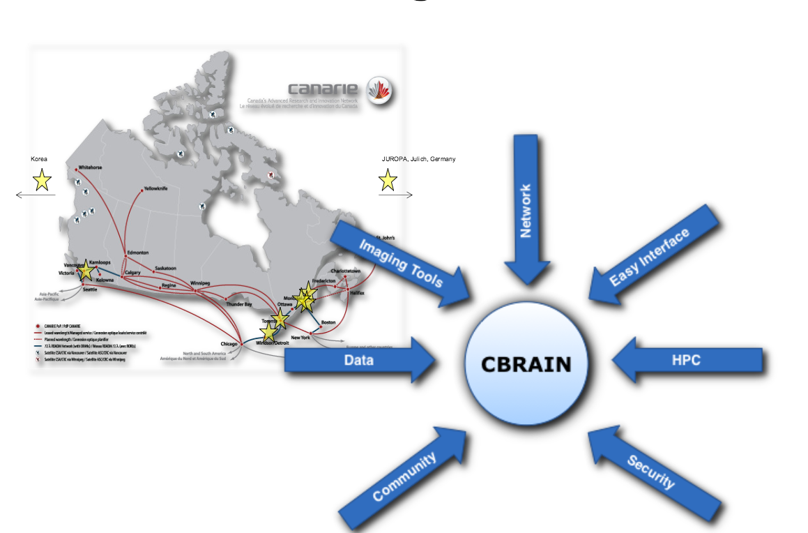
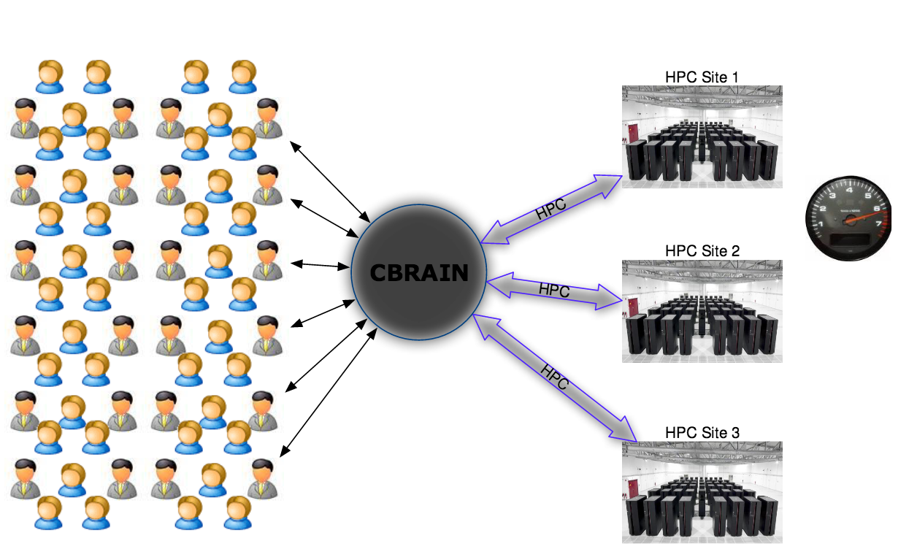
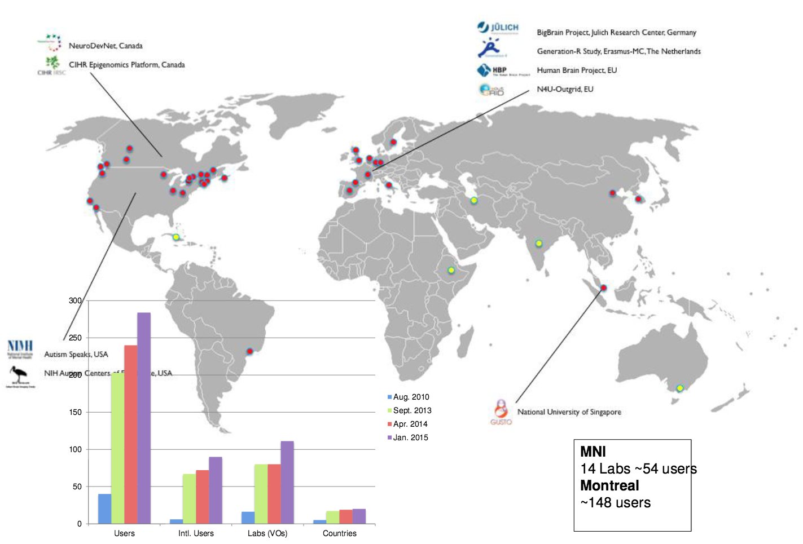

- A Global fellowship program, applicants (students) are paid (or not) from July-September (3 months), to work on Open Source projects.
- Goal: Help newcomers to expand their knowledge and skills, in order to acquire transferable skills.
- It is a not-for-profit organization. In 2015: 16 Sponsored teams and 4 non-sponsored.
- Students: generally 2 students. They work on an Open Source project full-time (Jul-Sept)
- Coaches: they work closely with their students. Day to day help, they help their students to learn. Coaches do not have to be experts on the team’s Open Source Project.
- Mentors: are experts on the Open Source project the team is working on. Ideally they are decision makers (or work closely), so they can set general goals, give direction and provide feedback.
CBRAIN
- A collaborative platform
- for neuroinformatics
- and more...
An integrative platform

Commodification of HPC

Distribution of CBRAIN Users
